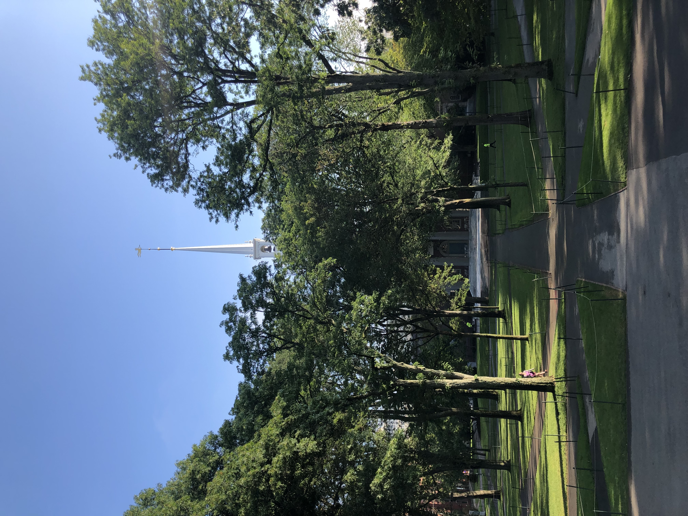
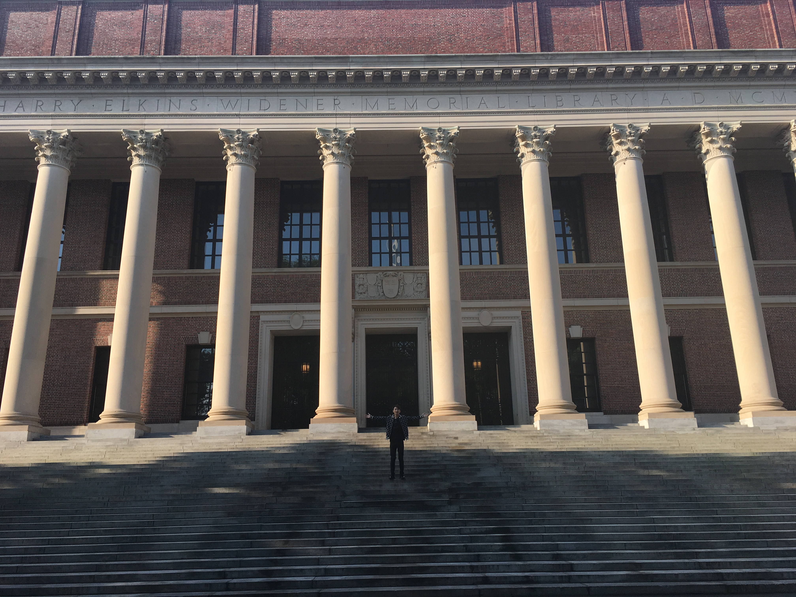
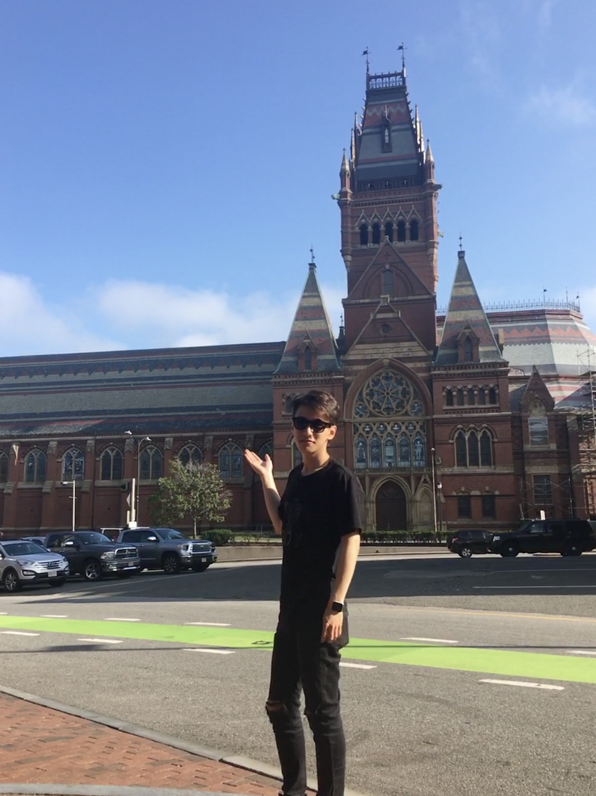
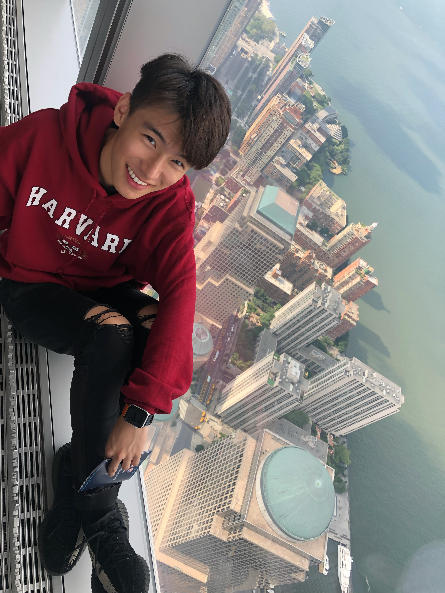
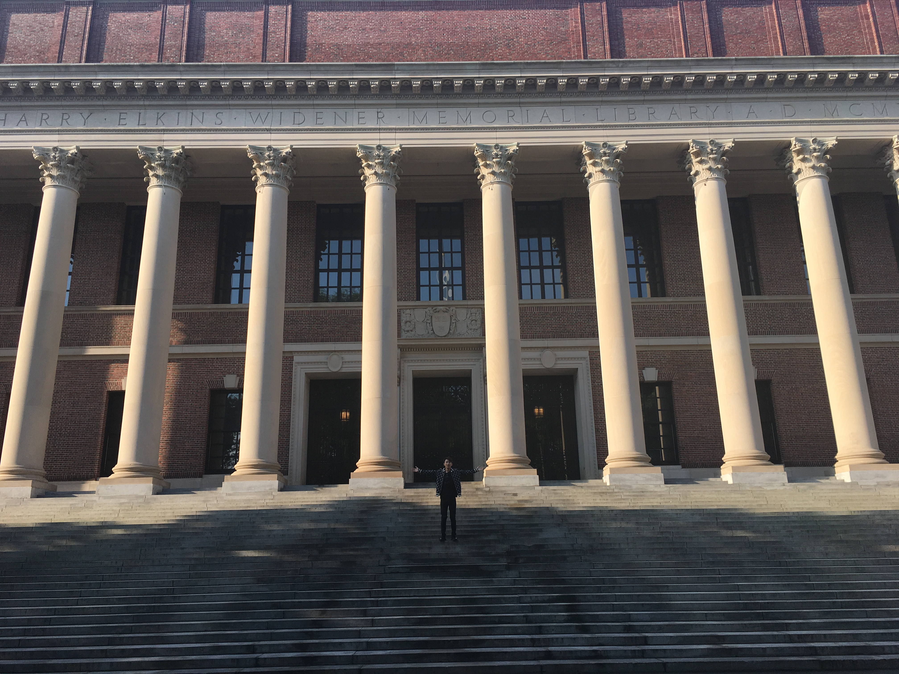
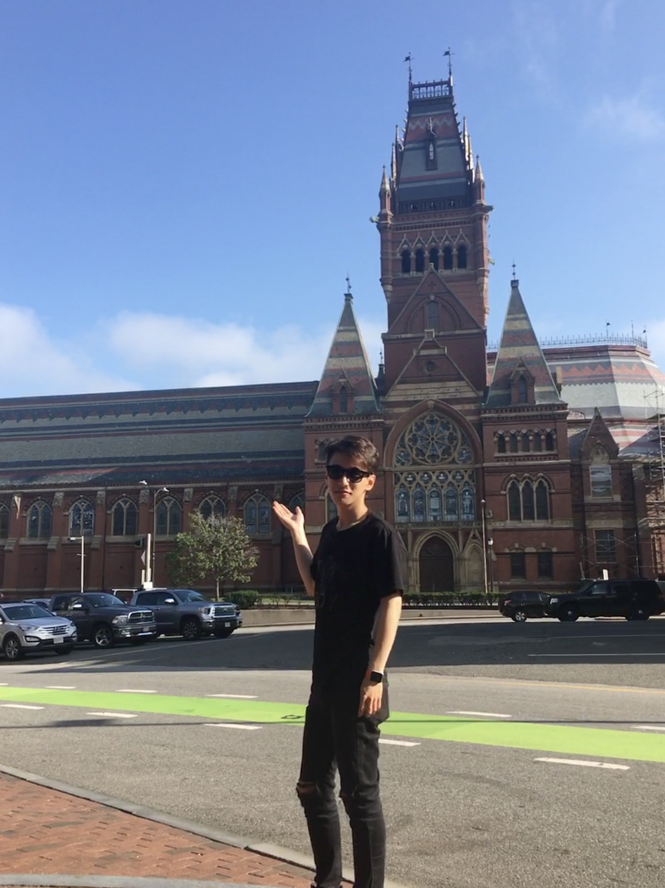
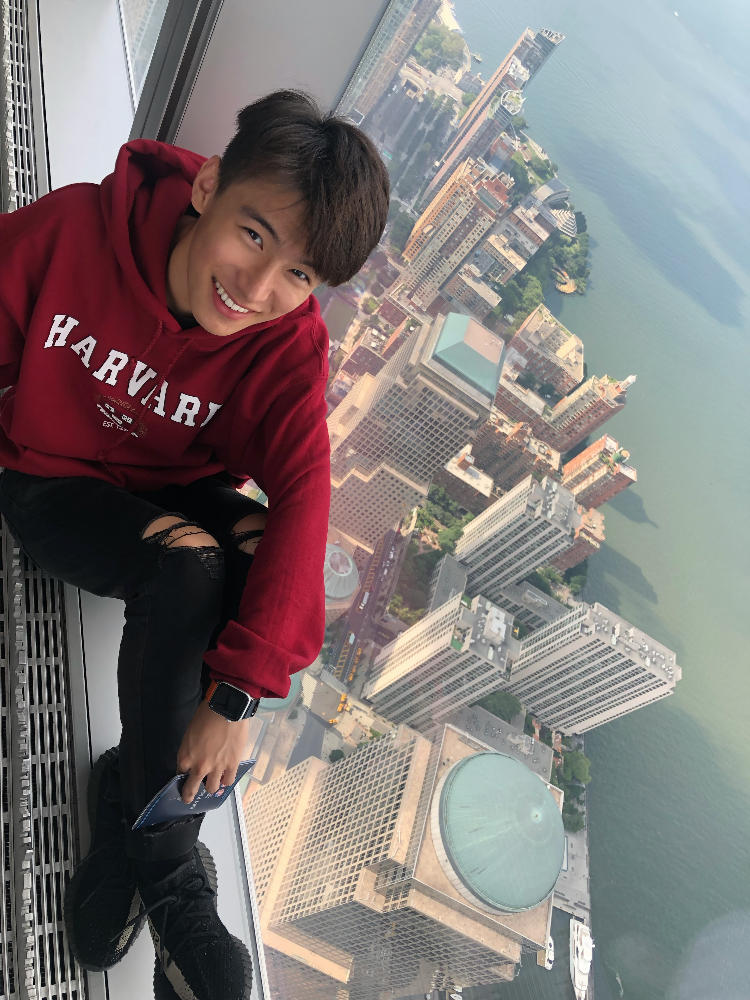

Jiahao Du
I am a self-motivated, highly efficient, and responsible person. I like History, Law, Politics, Math, and Music. I am good at time management, being able to overload college courses every quarter, thus graduating from the university in just 2 years. I like collecting fun facts and playing the piano in my free time. I also like to experience new things. I have gone skydiving, bungee jumping, and deep-sea diving. As an immigrant, I appreciate the opportunity and would like to give back to my community. I would like to intern in a congressional office to venture into a higher government administration than I was affiliated with. This valuable experience will best prepare me for law school and my future career.
I would like to express the enthusiasm to serve my community by having an internship in your congressional office. I have a special attachment to this land since the 39th district is where I learned and grew in the past 6 years. I lived in walnut and graduated from Walnut High school with considerable leadership experiences, and a strong interest in law, public policy. Currently, I am attending the University of California Riverside, majoring in Political Science and Mathematics with a 3.8 GPA. I would like to give back to my community and too believe I am a strong candidate for this congressional intern position.
Four years ago, I volunteered at the Queen of Valley hospital as a doctor assistant, I improved my communication skill by talking with patients. The year after that, demonstrating a passion for civic duty, I received an internship at Walnut City Hall as a Code Enforcement Specialist where I worked with constituents, conducted community outreach efforts, and organized civic events and projects. My experiences in the hospital and working in the city hall helped me develop the important skills that I need to become a better community leader in the future and strengthened my interest in law and political science.
Other than my experiences, I also possess good working habits and excel in time management. In college, I took more than 20 units of classes every quarter and plan to graduate in just 2 years. I like to challenge myself and excessive work has never been a burden.
My values and beliefs also align with Republican Party. For this reason, I am really glad Congresswoman Kim representing my district. I would be grateful if you can give me a chance to present myself in an interview. Thank you for your time and consideration, and I look forward to hearing back from you soon.
I would like to express the enthusiasm to serve my community by having an internship in your congressional office. I have a special attachment to this land since the 39th district is where I learned and grew in the past 6 years. I lived in walnut and graduated from Walnut High school with considerable leadership experiences, and a strong interest in law, public policy. Currently, I am attending the University of California Riverside, majoring in Political Science and Mathematics with a 3.8 GPA. I would like to give back to my community and too believe I am a strong candidate for this congressional intern position.
Four years ago, I volunteered at the Queen of Valley hospital as a doctor assistant, I improved my communication skill by talking with patients. The year after that, demonstrating a passion for civic duty, I received an internship at Walnut City Hall as a Code Enforcement Specialist where I worked with constituents, conducted community outreach efforts, and organized civic events and projects. My experiences in the hospital and working in the city hall helped me develop the important skills that I need to become a better community leader in the future and strengthened my interest in law and political science.
Other than my experiences, I also possess good working habits and excel in time management. In college, I took more than 20 units of classes every quarter and plan to graduate in just 2 years. I like to challenge myself and excessive work has never been a burden.
My values and beliefs also align with Republican Party. For this reason, I am really glad Congresswoman Kim representing my district. I would be grateful if you can give me a chance to present myself in an interview. Thank you for your time and consideration, and I look forward to hearing back from you soon.
Experience
Interns
• Code Enforcement Specialist Intern
• Worked with constituents, conducted community outreach efforts, organized civic events and projects, and other activities.
• Front Desk Receptionist, coordinates and performs guest arrival, departure and other tasks.
Volunteer
• Responsible for patient care
• Helping doctors and nurses, and forwarding laboratory records.
• Completed 100+ hours of volunteer hours.
Leadership
• Acting leader of VOH church youth group. Direct meetings every Friday, organize and prepare lectures. Help the youth learn to worship God
• Responsible for all volunteers of the Light Up Walnut annual event hosted by the church, organized and guided the volunteers to set up the booth, stage, and etc.
Education
Harvard University
University of California Riverside
Walnut High School
Portfolio





 
